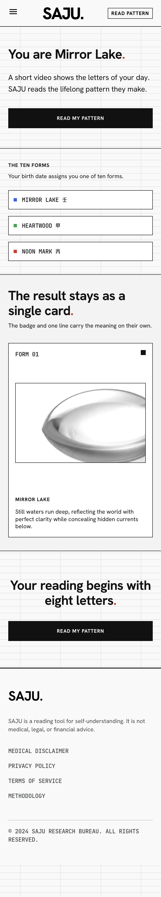
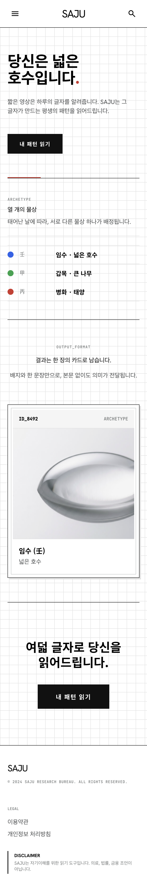
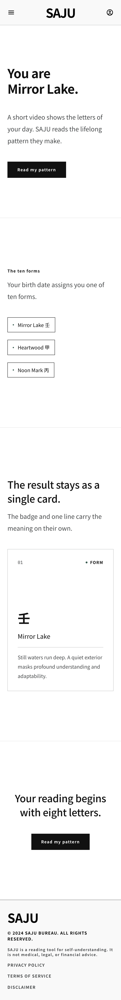
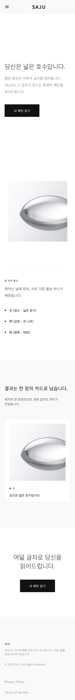
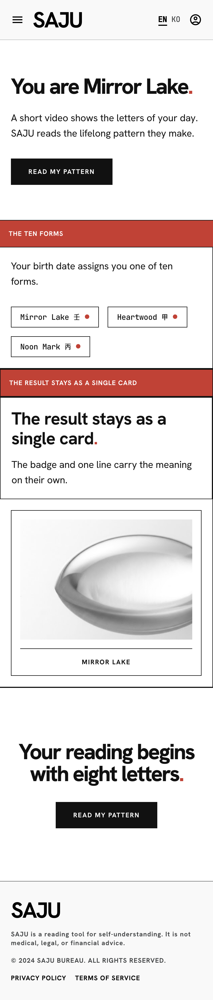
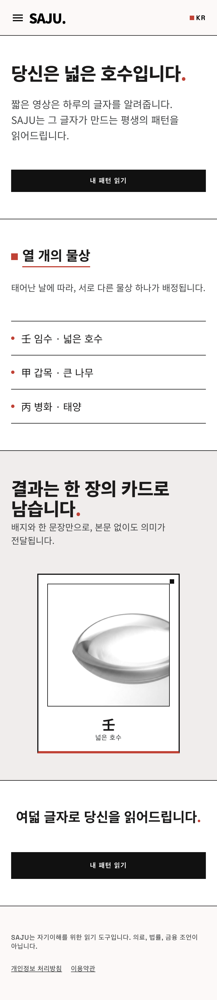
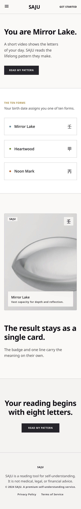
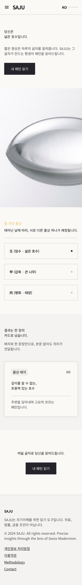
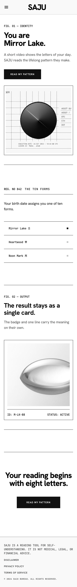
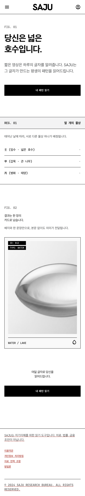

Swiss Data-Editorial 문법 안에서 단계적 변형 5종 — 동일 카피덱(KR 공식 문안 + EN 덱) · 동일 DS · 동일 구성. 각 변형마다 한국어본을 함께 검증: keep-all 전부 적용, 행간·본문 크기 실측값은 하단 표.
| 변형 | 성격 | 본문 크기 | 행간 | keep-all | 특기사항 |
|---|---|---|---|---|---|
| Dense Data | Economist식 조밀 데이터 그리드 | 16px | 1.80 ✓ | ✓ | 가독성 게이트 완전 통과 |
| Airy Gallery | 여백 극대화 미술관 카탈로그 (레드→딥 그린) | 14px ⚠ | 1.43 ⚠ | ✓ | 본문 하한 16px 미달 — 채택 시 스케일 상향 조건 |
| Red Signal Bold | 신호 레드 확대 · 확신의 마커 | 18px | 1.56 (수용) | ✓ | 임팩트 최대 |
| Soft Warm | 웜 화이트 · 온도 완화 · 글로벌 친화 | 16px | 1.80 ✓ | ✓ | 가독성 게이트 완전 통과 |
| Mono Ledger | 모노 원장 · 레지스트리 문법 · 데이터 무결성 극대화 | 18px | 1.56 (수용) | ✓ | 근거 태그와 문법 일치 |
실측: ego-browser getComputedStyle, 390px 뷰포트 (swiss-variants/readability-ko-v2.json)
Economist식 조밀함. 헤어라인 그리드 전면 · 타뷸러 넘버 · 소형 캡스. 신뢰·데이터 정밀 최우선.


딥 그린 액센트로 전환, 여백 55%+, 조용한 카탈로그. 본문 14px는 하한 미달 — 채택 시 스케일 상향 조건부.


신호 레드의 존재감을 키운 확신 변형. 섹션 마커·언더라인·블록에 레드. 스위스 그리드 유지.


웜 화이트 #FAF9F6 + 웜 그레이 헤어라인 + 골드 미니 액센트. 글로벌 컨슈머 온도 완화.


모노스페이스 라벨·숫자·캡션 — 원장/레지스트리 문법. NODE B2 근거 태그 체계와 문법 일치.

